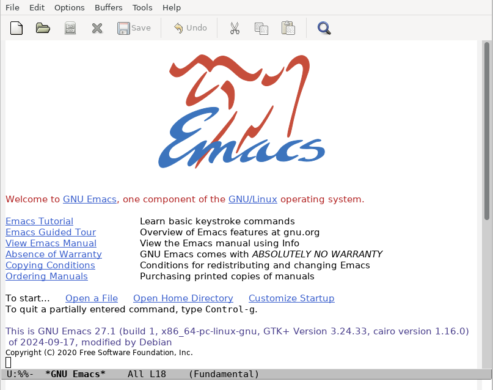

Emacs Basics
GNU Emacs, or more simply: Emacs, is a family of text editors notable for their extensibility. As mentioned before, Emacs has a steeper learning curve than the other two options, with over 10,000 built-in commands and a UI which allows for these commands to be combined into automated macros, giving us the name of the software from "Editor Macros."
The latest version of Emacs can be downloaded by following this link to the official site. You can also install it from the terminal by running:
sudo apt-get install emacs
You can then open Emacs by typing:
emacs
And pressing Enter. This will open the graphical window, which should look similar to this depending on your installation:

Basic Commands:
Emacs commands will generally involve the CONTROL (CTRL or CTL) key and the META key (sometimes EDIT or ALT). It is recommended to follow along with the Emacs Tutorial section which is the first link visible on startup.
Open a File
From the terminal, you can create or open a file by entering the appropriate directory and entering:
emacs filename.txt
- This opens the specified file in a new
Emacswindow. If the file doesn't exist yet,Emacswill create it when you save.
You can also start Emacs and open a file from within it by pressing CTRL+X and then CTRL+F.
Edit or Insert Text
- Emacs is always in insert mode by default, so you can simply start typing.
Save Changes
- To save your file, type
CTRL+Xfollowed byCTRL+S.
Quit
- Type
CTRL+Xfollowed byCTRL+C. You can quit without saving by skipping the saving step.
Search for Text
-
To start a forward search, type
CTRL+S. -
To start a backward search, type
CTRL+R -
Emacsperforms incremental search by default, so as you type the pattern, it immediately searches. -
Pres
CTRL+SorCTRL+Ragain to continue searching in the same direction. -
Press
Enterto finish the search and leave the cursor on the match. -
Press
CTRL+Gto cancel the search and return to the original position.
Regex in Search
By default, searching in Emacs is literal.
-
To use regex instead, type
META+CTRL+S(ALT+CTRL+S). -
You can toggle between literal and regex search with
META+R(ALT+R) during a search.